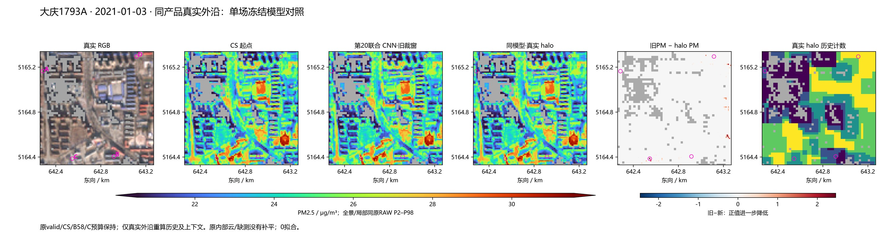
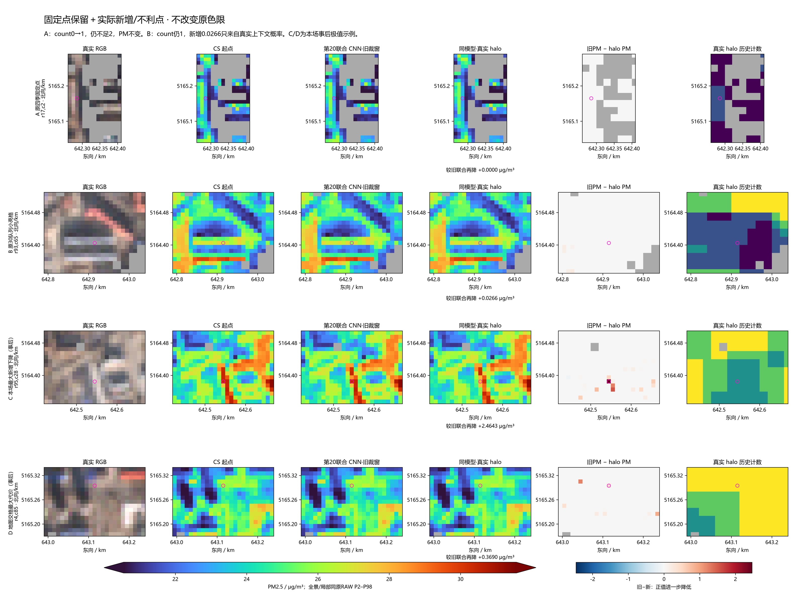
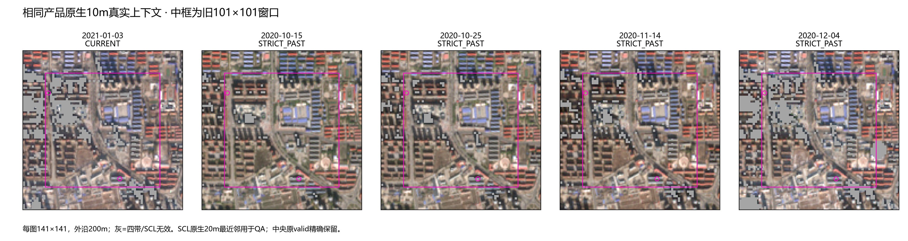

原生同产品四带＋SCL，5日期、31.64MiB；同第20模型，0拟合，只重放1场。旧裁窗流程逐值复放后才作halo对照。
两个原目标改善有限：左边界点count0→1，仍不足2、PM不变；原30小亮点count仍1，只因真实CNN上下文再降0.0266。全场新增156个历史可用格，同时地图交格有最多0.3690的额外降低。
实际结果 · 原固定点 · 逐历史有效域 · 原30中本场对象 · 固定方案


